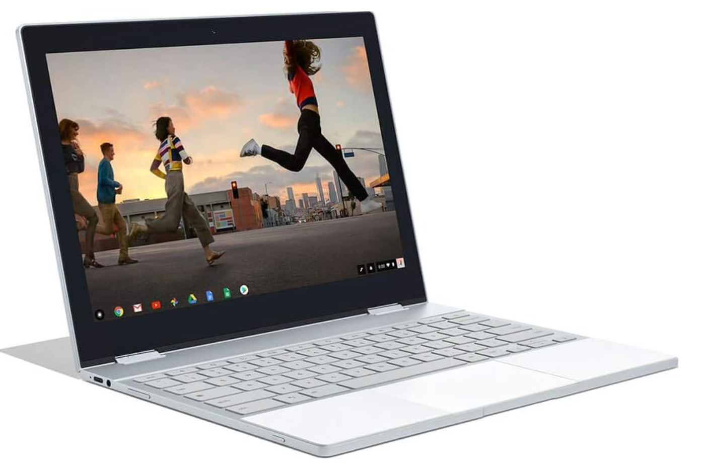

The Pixelbook was an ultrabook launched on 2017 by Google, running ChromeOS. It had 6 years of software support and mine expired in June 2024. I have decided to wipe it and install Ubuntu on it around September 2023.
 Photo by Google.
I’ve been a happy user of a Google Pixelbook for a few years. It has brilliant hardware and software. It’s not a regular laptop, as it uses ChromeOS as an operating system. I would describe it as a computer for the mobile phone age: instantly on, simple, user friendly, very low maintenance and it Just Works. This might not be a big deal in 2023 but, in 2017, I can assure you it was.
Unfortunately, as for other main vendors, it also has finite software support from the vendor. Every ChromeOS device has an expiration date, when it’s no longer possible to install any updates. This wouldn’t be necessarily a problem for ‘regular’ operating systems, where we can at least keep the apps up to date. In ChromeOS, the Chrome browser is a central part of the operating system and can’t be installed externally. This means, after the laptop expires, it will continue to function but it will not get the latest features and, more importantly, it will no longer receive the latest security patches, thus potentially exposing private data or be exposed to other attacks.
It is possible to install Android Chrome from the Google Play store or install desktop Linux Chrome from the Crostini container but none of these would provide a first-class experience and important integration with the rest of the operating system would be lost. Interestingly, it is possible to have a lifetime of well supported Chrome in a device using any other operating system but not on a Google device, with a Google operating system.